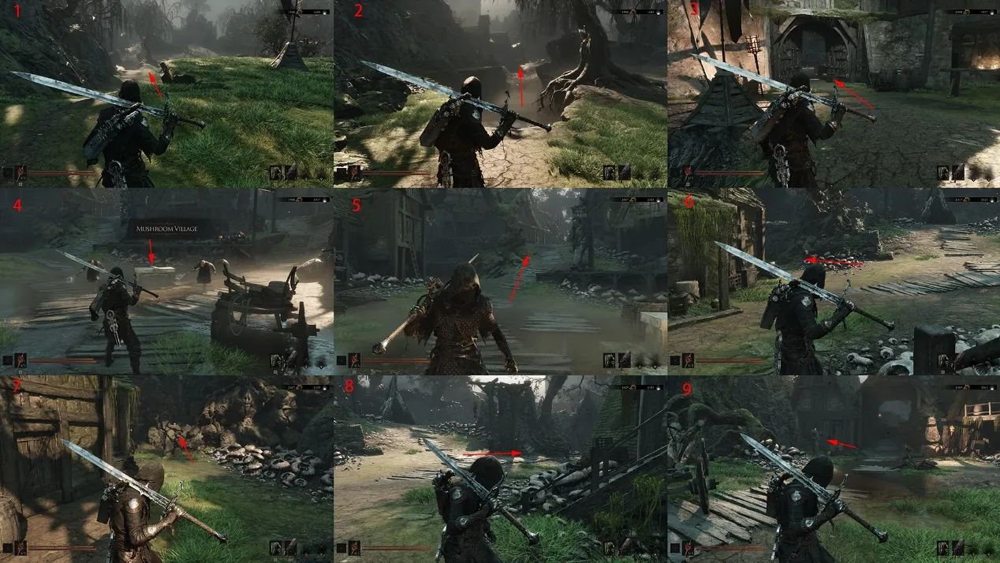
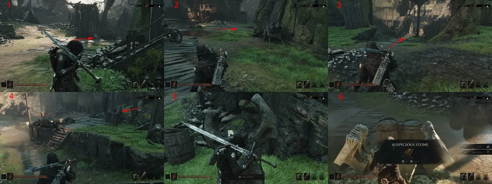
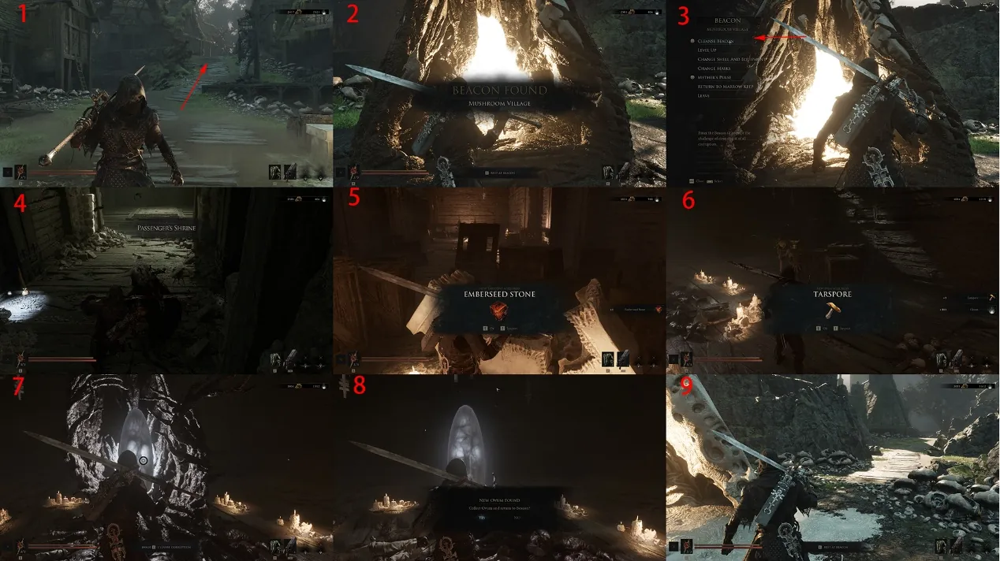
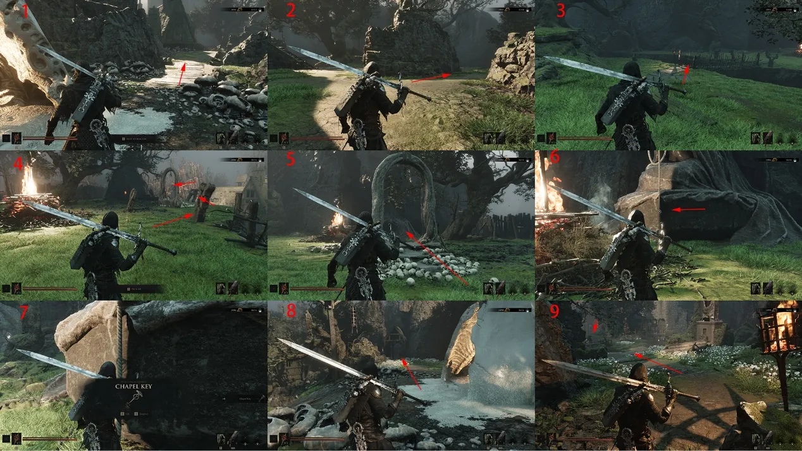
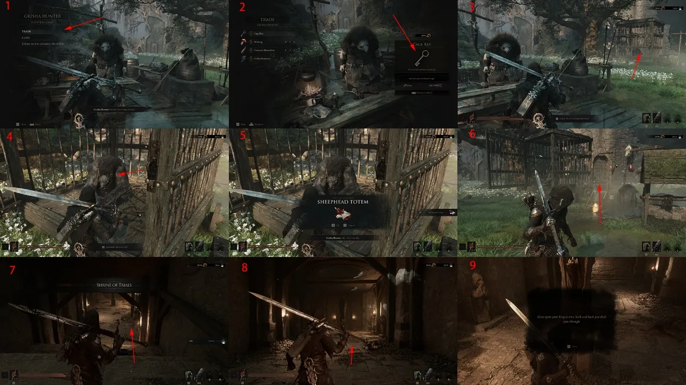
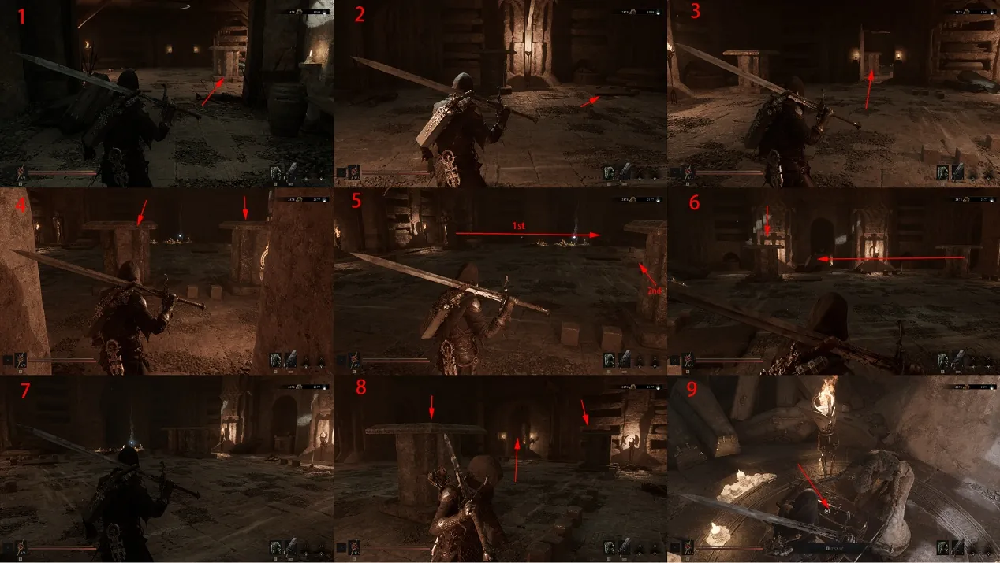
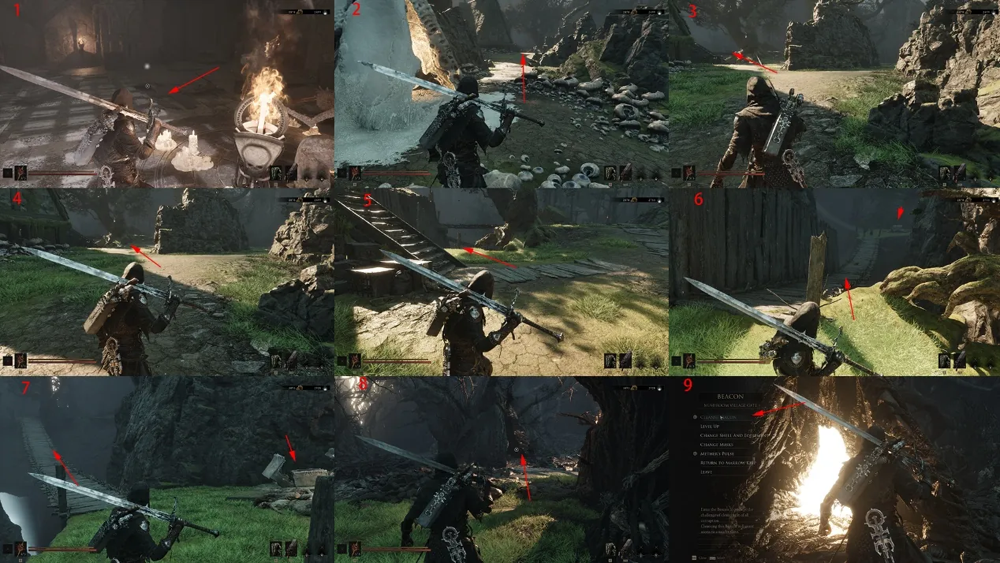
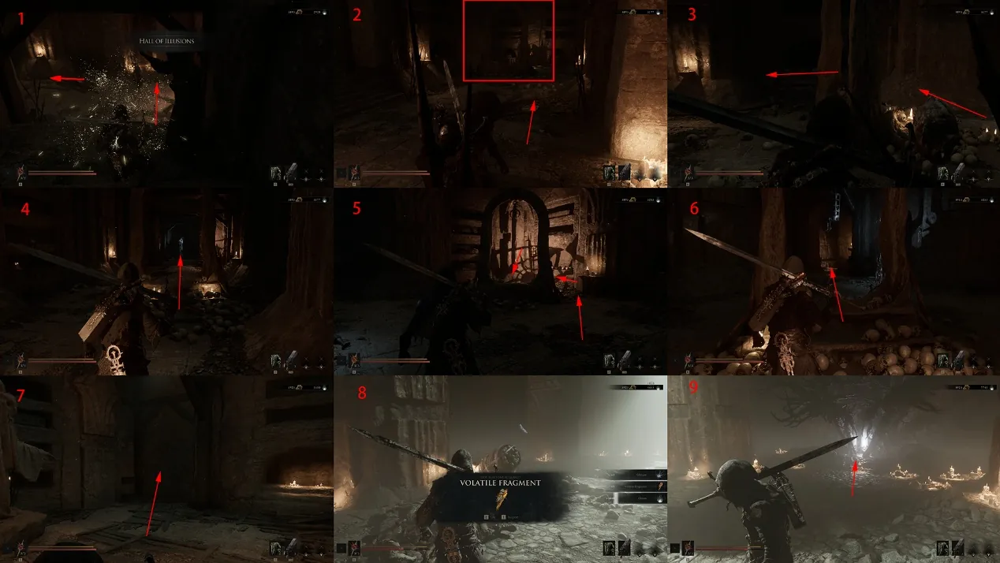
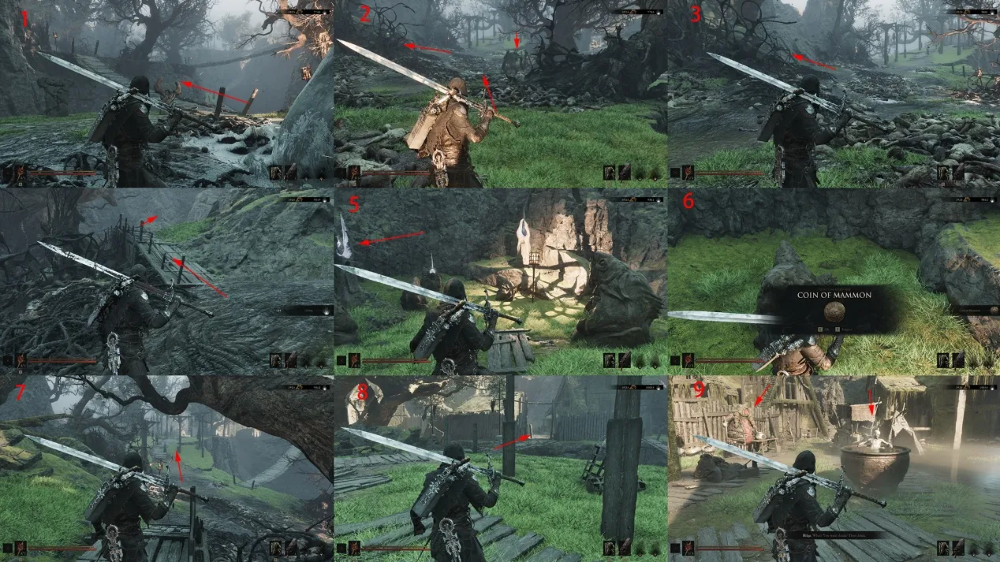
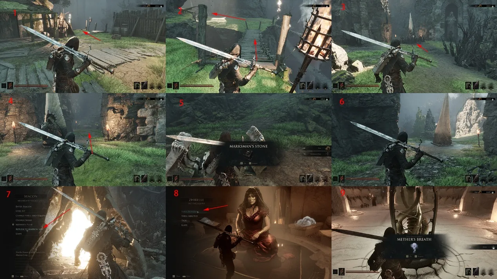

Follow the annotated path through Mushroom Village, including the Church Key puzzle, Trial Temple weapon and the second Sacred Egg.
Start
Widow's Overlook exit
Key weapon
Axe & Dagger
Story item
Sacred Egg

Route 01Travel from Widow's Overlook and follow the marked approach. The first board establishes the correct path to the village gate.

Route 02Stay with the arrows at the entrance; the village route begins through the large gate, not the nearby side paths.

Route 03Enter Mushroom Village, clear the enemies and locate the locked chest. Find all three Make Offering points to open it and collect the Celebration Stone.

Route 04Unlock and purify the Mushroom Village Beacon. Inside, break the right wooden door, drop down, break the left door and clear the room for 500 coin and a log. Continue down, loot the chest, purify the corruption and take the Sacred Egg.

Route 05Clear the bridge and approach the stone gate from the rear. The route only works from behind the gate; doing it from the front blocks the key pickup.

Route 06After passing behind the gate, collect the Church Key beneath the statue and return to the Beacon's left path. Speak to the Hunter, buy the Cage Key, free the nearby cage for the Ram Head Totem, then use the Church Key on the Trial Temple.

Route 07Read the note behind the statue and back away while facing it to open the next door. Strike the movable stones into the marked positions, then place one on the pressure plate. The statue room holds the Axe & Dagger.

Route 08From the Beacon, turn right and cross the suspension bridge left of the tree. Clear the enemies, open the chest for 1,000 coin, then continue to unlock and purify the Mushroom Village Gate Beacon.

Route 09Inside the Gate Beacon, approach the stone gate from behind, break the stone wall and enter the arena for Great Illusionist Valanik. Purify the corruption after the encounter for the next Sacred Egg. Two Glimpses sit by the glowing doorway.

Route 10Cross to the platform, clear the elite enemy and take the Mammon Coin by the stele. Complete the nearby trial for a Heartstone, loot the Archer Stone chest and collect 300 coin on the left. Return to Marrow Keep and hand in the Egg.